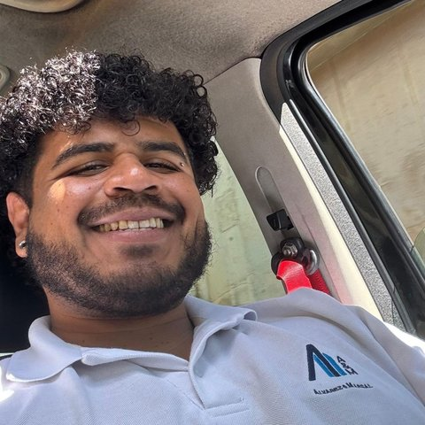

IT Analyst
- Sole Spanish-speaking IT analyst supporting end-users and operations across Chile, Argentina, Peru, and Ecuador — recognized internally for cross-regional scope.
- Manage and resolve IT infrastructure tickets via ServiceNow, ensuring SLA compliance across a multinational consulting environment.
- Administer Office 365, Azure AD, and hybrid server environments in alignment with global corporate security standards.
- Coordinate with global IT teams on infrastructure rollouts, access control, and policy enforcement across LATAM offices.